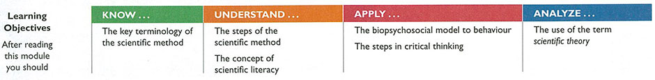
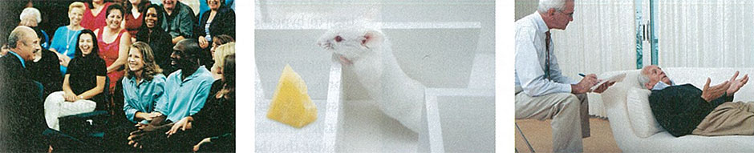
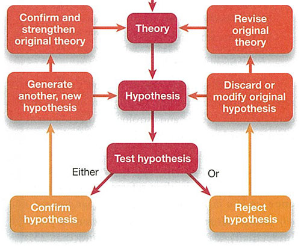

Skimming
Skimming is a pre-reading strategy that provides the reader with a quick overview of the text.
When readers "skim" a text, they are not reading in the traditional sense — from left to right, top to bottom. Instead, we move our eyes across the page quickly, attempting to get a sense of obvious features, such as:
- Overall length
- Number and length of paragraphs
- Headings or sub-headings
- Graphics or illustrations
- Bolded words
- Tone/style
Select the icon to see an example of the conclusions that can be drawn.
The Science of Psychology
Almost everyone has misinterpreted someone else's meaning in a conversation. You could misinterpret someone leaning closer to you as flirting when really you were just talking too softly. You could mistake someone's tone of voice as being annoyed when that person was actually talking loudly to be heard over other people in the room. We also frequently misjudge other people's attitudes and personalities. The unfriendly and arrogant person at work might actually turn out to be a shy person who dislikes crowded social events. In all of these situations, we make inferences about another person based on the different cues they provide us. But how do we decide which cues are important? Are they really the right cues to be using when we want to explain other people's behaviour?
The situation is even more complicated in the wired world of the 21st century, with everyone plugged in to email, online gaming, and social networking sites like Facebook. But these new ways of interacting with people from around the world also come with their own set of challenges. How do you interpret someone's behaviour or intentions when all you have to go by is words on a screen and cartoon-like happy faces? How much information do you need to (safely) disclose in order for other people to understand you? These puzzles have led researchers to develop a new line of research, cyber emotional intelligence, that examines the assumptions that we make about people based on their online personalities (Ben Youssef & Ben Youssef, 20 I I).
The purpose of this opening section isn't to depress you; instead, it is to show how complex human behaviour is and how challenging it can be to try to understand it. In this textbook, we will examine many different aspects of behaviour-from basic brain and perception functions to memory to social behaviours. But all of these chapters have the same central theme: the quest to understand why and how we behave the way we do.
Focus Questions
- How can the human mind, with its quirks and imperfections, conduct studies on itself?
- How can scientific and critical thinking steer us toward a clearer understanding of human behaviour and experience?

Left: AF archive/ Alamy; centre: sextoacto/Shutterstock.com; right: Flirt/SuperStock
Television personalities such as Phil McGraw, experiments involving animals running mazes, and sessions between a therapist and client are common notions about the work of psychologists. But how well do they represent the field?
Which words and images come to mind when you hear that someone is a psychologist? Many of us think of professionals conducting therapy or people in white lab coats watching rats run through mazes. The field of psychology is also viewed through the lens of "pop" psychology-the scores of self-help gurus on TV, on the radio, and in the books lining bookstore shelves.Although these images are not necessarily false, they don't fully capture the scope of the field of psychology. One goal of this book is to challenge your expectations about psychology and to show you that psychology-and psychological research-affect almost every aspect of your life.
The Scientific Method
What exactly does it mean to be a scientist? A person who haphazardly combines chemicals in test tubes may look like a chemist, but he is not conducting science; a person who dissects a specimen just to see how it looks may appear to be a biologist, but this is not science either. In contrast, a person who carefully follows a system of observing, predicting, and testing is conducting science, whether the subject matter is chemicals, physiology, human memory, or social interactions. [n other words, whether a field of study is a science, or a specific type of research is scientific, is based not on the subject but on the use of the scientific method. The scientific method is a way of learning about the world through collecting observations, developing theories to explain them, and using the theories to make predictions. It involves a dynamic interaction between hypothesis testing and the construction of theories, outlined in Figure 1.1.
Hypotheses: Making Predictions
Scientific thinking and procedures revolve around the concepts of a hypothesis and a theory. Both guide the process and progress of the sciences; however, it is important to differentiate between these terms. A hypothesis (plural: hypotheses) is a testable prediction about processes that can be observed and measured. A hypothesis can be supported or rejected (you do not prove a hypothesis), and a scientific hypothesis must be testable. These rules are regularly broken by people claiming to be scientific. For example, astrologers and psychics are in the business of making predictions. An astrologer might tell you, "It's a good time for you to keep quiet or defer important calls or emails."This sounds like a
{FIG. 1.1} The Scientific Method Scientists use theories to generate hypotheses. Once tested, hypotheses are either confirmed or rejected. Confirmed hypotheses lead to new ones and strengthen theories. Rejected hypotheses are revised and tested again, and can potentially alter an existing theory.
request to not even bother testing the prediction, because it might come true. The horoscope leaves two courses of action: (1) cave in, fully accept the prediction, and heed the advice or (2) take your chances. If you take your chances, it is very likely that by the end of the day you can find at least a grain of truth in the prediction. Horoscopes make very general predictions-typically so much so that you could easily find evidence for them if you looked hard enough, and perhaps stretched an interpretation of events a bit. In contrast, a good scientific hypothesis is stated in more precise terms, such as the following:
- "People become less likely to help a stranger if there are others around."
- "Cigarette smoking causes cancer."
- "Exercise improves memory ability."